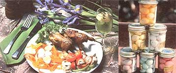
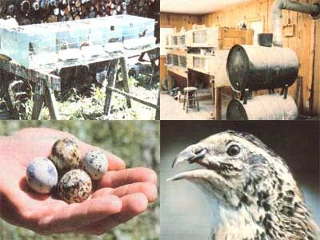

Issue # 71 - September/October 1981
Join the folks who've found out that "small is beautiful" applies to poultry, too.
The Japanese call the birds uzura, and have raised them for centuries. Early American colonists called them "Bible quail" and found them to be economical providers of protein. Modern homesteaders, however, refer to them as Coturnix (from their generic name) and delight in the virtues of these astounding little fowl. Coturnix quail, you see, require no more care than do chickens ...but they mature faster, produce more eggs, need less food and space, and have more uses than virtually any other kind of domestic poultry!
I was first introduced to the small birds seven years ago, when I was looking for a type of fowl I could raise on my half-acre garden in New York City. To my delight, I discovered that quail can be propagated in sufficient numbers to make a profitable business ...right on the balcony of a high-rise urban apartment! Furthermore, even though they're classified as game birds-which makes them a gourmet delicacy-no license is required to raise them.
There are six varieties of Coturnix, which differ from one another primarily in size and color: British Range, Tuxedo, English White, Manchurian Golden, Pharoah Dl, and the comparatively new Australian Speckled Fawn. Of these, the Pharoah Dl is both the largest and the best egg producer.
CAGING
Almost any small cage can be modified to hold Coturnix. Old tiered chicken brooders, with the heaters removed, serve as excellent colony pens. Or, of course, you can quite easily build your own enclosures. Be sure to provide 40 to 50 square inches of floor area per bird. The interior height of the pens should be about 8 to 10 inches to prevent the active quail from flying up and scalping themselves on the ceiling, and the floor and sides are best made of half-inch wire mesh ...which is small enough to prevent predators from sticking their paws inside, but large enough to permit droppings to fall through. Pans can be placed underneath the cages to catch the nitrogen-rich manure for your compost bin or garden. And, for easier egg collection, the floor should be given a slope of one inch per foot: The mesh can then project a few inches beyond the cage and bend upward, allowing the eggs to roll out of the pen and into a wire apron, ready for gathering.
FEEDING
Coturnix require a feed containing 21 to 25% protein (chicks require an even higher percentage). Such levels can be found in commercial turkey starter and game bird starter, but-if you can't get these-you can use a feed with less protein and supplement it with grain, sprouts, and bugs. (A small light in or near the cage will attract insects to your birds' "dinner table".)
BREEDING
The quail begin to breed and lay eggs at only six to eight weeks of age ...as opposed to the 20 to 24 weeks required for a chicken to begin producing. You should, of course, use only the biggest and best looking birds for breeding.
Three of the six Coturnix varieties can be sexed by color at about three weeks of age. The Australian Speckled Fawn male has a dark head, while that of the female of the species is light. Both Manchurian Golden and Pharoah Dl males have brick red breasts, whereas the females' breasts are speckled.
The other varieties must be sexed by vent examination after they've begun to breed. A sexually active male will have a rounded protrusion above his vent. When this ball is gently squeezed, a "foam" will run out. (The foam, which resembles shaving cream, is a kidney discharge.) The size of the globe indicates the degree of interest the male has in mating.
The breeding ratio can be one male to two females, or simply one to one. You can put each pair or trio in a separate pen or use a colony cage to accommodate several breeding groups ...whichever is more convenient.
HATCHING
Fertile eggs should be gathered daily (collect them several times a day during very hot or cold weather). When you're saving eggs for hatching, select only the ones that are perfect and do not wash them. Store the birds-to-be for no longer than ten days-at a temperature between 55 and 70°F and a relative humidity of about 75%. They should be kept with the small ends down and rotated laterally at least once a day.
Domestic quail have lost the brooding instinct ...thus their eggs must be either hatched artificially or set by a hen of another species. (Banties are very accommodating in this respect.) Choose a lightweight bird for setting, preferably one without feathers on her legs that might harbor lice. Every effort should be made, in fact; to use hens that are free from disease and parasites of any kind. Even bantam chickens that appear to be healthy might transmit diseases to delicate quail chicks.
If you opt for hatching your eggs with a hen, get a nest box and put it in a shaded, protected location. Arrange the dirt inside the box in a bowl shape, and line the depression with fine straw or hay. Finally, fill the nest with culled or dummy eggs. At dusk, select your already broody feathered foster mother and put her on the nest. After you're sure that she's intent on setting, wait until she's left the nest to feed and then replace the dummy eggs with 16 to 20 fertile ones. Check the clutch each morning while the hen is eating breakfast, and remove any broken eggs or droppings. On the sixteenth day of incubation, the eggs should hatch ...resist the temptation to peek, though, since the hen should be left alone during that time.
You can either allow the bantam to care for the chicks or simply put them in a brooder. If you want the hen to do the honors, though, confine the tiny babies with her in order to give them an opportunity to learn her language.
On the other hand, if you use an artificial incubator, don't assume that you know how to use the product ...read the manufacturer's instructions. Then allow the incubator to run for a day or two before you put in the eggs. Once they're in place, turn them every four hours or at least four times each day-but do not disturb them after the fifteenth day. Throughout the incubation period, keep still-air incubator temperatures at 102 to 103°F. Forced-air incubator temperatures should be a little lower, around 99 to 100°F. In both types, the humidity should be kept at 60%. During hatching you'll need to lower the temperature 1/2 to 1°F and increase the humidity by 10%.
It may seem cruel to do so, but resist the temptation to help weak chicks from the shell. Such birds generally die in the brooder, or-if they survive-develop into sickly, inferior adult quail. Those chicks that do peck their way successfully into the world should be allowed to fluff out and dry before being put in the brooder.
Finally, the incubator must be cleaned thoroughly after each hatch. (Remember, the best way to control disease is to prevent it! )
CHICK CARE
Newborn quail need at least ten square inches of brooding pen space each. If a heat lamp is used, it should be placed 18 inches from the floor and covered with wire mesh to prevent the litter from touching the bulb and igniting. Connect the heat source a day before the quail are due to hatch in order to have the brooder area warm and ready. Then, for their first hour or so, keep the little fluffies confined under the heat unit. (Later on, the best indication that all is well in your brooder is a good distribution of baby birds over the floor.)
Food should be supplied in flat trays for several days, after which it can be given in chick feeders. Make sure that the feed is ground fine-you can use a blender to reduce it to the consistency of drip-grind coffee-to enable the chicks to eat it without choking. Provide water in a standard Mason jar waterer with marbles or pebbles placed in the tray to attract the tiny birds.
For the first two days the wire-mesh floor or litter should be covered with burlap, but be sure the edges are secured so the babies can't get underneath the fabric and smother! Incidentally, don't use hardwood shavings for litter, since such materials can irritate the birds' eyes and nasal passages.
Maintain an incubator temperature of 98°F for the first week. After that, decrease the heat by 10°F each week until the chicks' cold-tolerance level matches the ambient outside temperature. (In summertime, this will take two or three weeks.) When it's time to take the quail out of their nursery, put them in a pen by themselves. They may be pecked to death if caged with mature birds.
TRICKING THE LIGHT FANTASTIC
The laying cycles of Coturnix are-like those of many other types of poultry keyed to the increase and decrease of daylight. The birds improve their productivity when the days start to lengthen in early spring, lay well as long as daylight lasts 14 hours or more, and then slow down. This means that, at the end of September, you must provide extra light if you want to prolong the period of good egg production. You can use a 60watt bulb for every two-tiered chicken brooder or similar cage ...or, if you prefer, install individual bulbs of, say, 7 or 15 watts in each coop.
On the other hand, you won't want your birds to keep on laying when it's time to fatten them up for the table. A decrease in the amount of light will stop the quails' breeding urge and lessen their activity, allowing them to put on weight. However, the birds must be exposed to several (about six, but less than eight) hours of sunlight each day if they're to stay healthy. By covering a cage with louvered doors or shutters, you can control the exposure to light, at the same time assuring good ventilation (which is essential). Quail confined to light-denial cages between the ages of two and five weeks develop more slowly than normal, yet become larger mature birds.
QUAIL EGG DELIGHTS
The fast-maturing qualities and desirable feed-to-egg ratio of the Coturnix can make egg production quite profitable. The "quail fruit" can be served in the same ways as can chicken eggs-fried, scrambled, baked, poached, boiled, and in sundry recipes (where you'll need to substitute approximately five quail eggs for one large chicken egg)-plus a few specialties. Caterers who serve Oriental cuisine are sometimes willing to pay respectable prices for Coturnix eggs, as are bars and cocktail lounges ...which serve them, hard-boiled and chilled, with drinks. Pickled quail eggs are also a delicacy, and sell-in my part of New York for over $1.80 a pint. (A recipe for pickling eggs accompanies this article.)
GOURMET FEASTING
Quail meat is considered a delicacy, and therefore commands a high price. In fact, frozen dressed quail sell for around $4.00 apiece! The meat itself, which is higher in protein than chicken, is tender and has a slightly gamy flavor that many folks enjoy. Producing quail meat for home use is not as economical as is raising chickens for this purpose, but you can make a nice profit by selling the dressed birds to restaurants, butchers, and specialty shops ...and live, fattened Coturnix can be sold to poultry markets.
Of course, you can slaughter and dress the birds yourself without much difficulty. Do so when they're between eight and ten weeks of age, or whenever egg production slacks off (usually after about one year). The live weight of a mature bird is between six and eight ounces ...dressed weight is equal to 75% of the live weight.
To kill and dress quail, you'll need a pair of sharp scissors, a knife, newspaper, and containers of hot and cold water. After snipping the birds' heads off with the scissors, allow the blood to drain out. Then drop each quail into hot water (148°F) for five seconds to loosen the skin and feathers (roast quail are more attractive if plucked, but plucking is extremely time consuming) ...remove the skin, entrails, and vent ...and cut off the legs at the middle joint. Finally, plunge the birds into cold water to dispel any body heat still remaining and prevent the growth of bacteria.
Quail can be prepared for the table in a variety of ways (check the sidebar for one possibility). Generally speaking, two birds make one serving.
SOURCES
Of course, one of the first things a would-be quail-raiser has to do is locate a source of the little wonders. Your best bet, if you want to purchase mature birds which have already begun to lay, is to check local suppliers or your county agricultural agent. It's a matter of simple economics: If you send for quail out of state, they'll be shipped air mail, and the charges-to say nothing of the required health certificate-will be reflected in the price of the birds. If you do purchase quail locally, however, be sure they are alert, large, and fully feathered. The cost should run anywhere from $1.00 apiece for nondescript stock (quail which are not selectively bred to maintain high quality) to $10.00 for a show-quality bird. Excellent quail stock can be obtained, usually, for about $3.00 apiece.
If you must order quail chicks through the mail, try to get some that are at least one week old (they're commonly called "started" birds), as they'll stand the rigors of shipping better than do day-old babies. Chicks will be sent parcel post to your home or the nearest post office.
As an alternative to buying birds, you might want to purchase fertile eggs and incubate them. They're usually sent by priority air mail or United Parcel Service, and sell for between 10V and 25d each (the shipping costs are often included in the price). Few quail farms will guarantee hatchability, since they have no control over handling during the shipping and incubation processes, but most outfits do enclose extra eggs to offset possible losses. It's not uncommon to get 90% hatches from eggs sent thousands of miles ...in fact, most of my flock are descendants of quail hatched from eggs sent over 3,000 miles!
ALL HAIL THE COTURNIX QUAIL
Well, there it is: For the city or country dweller the quail can be a bird of many uses, few problems, and considerable profit potential ...plus beauty and charm. And, if that's not enough, Coturnix also have delightful singing voices! Now I ask you, what more could a poultry fancier ask for?
|
 For elegant dining, roast quail with vegetables and hard-boiled eggss ...A pyramid of pickled perfection! |
 |
|